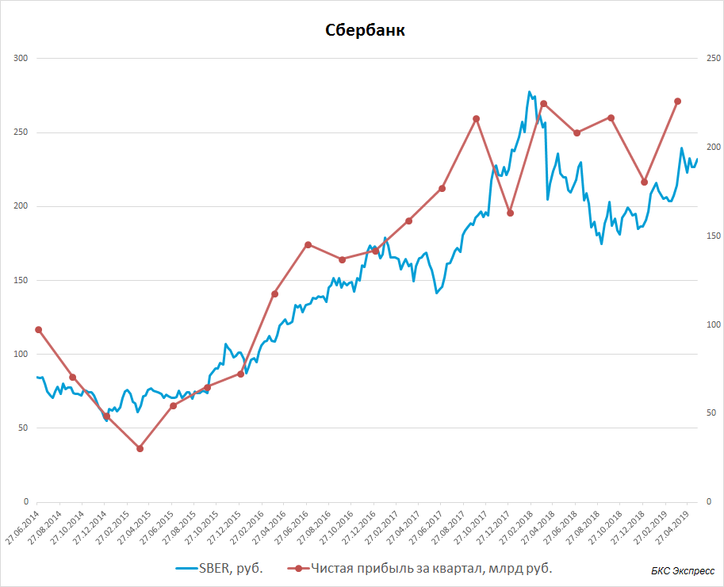
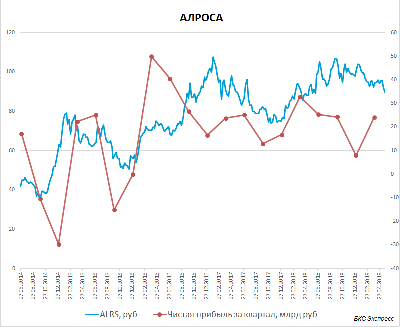
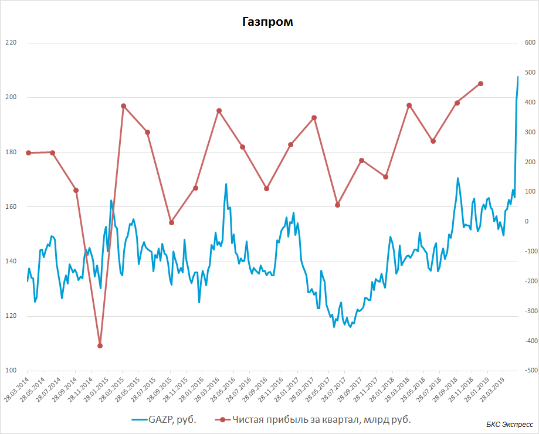
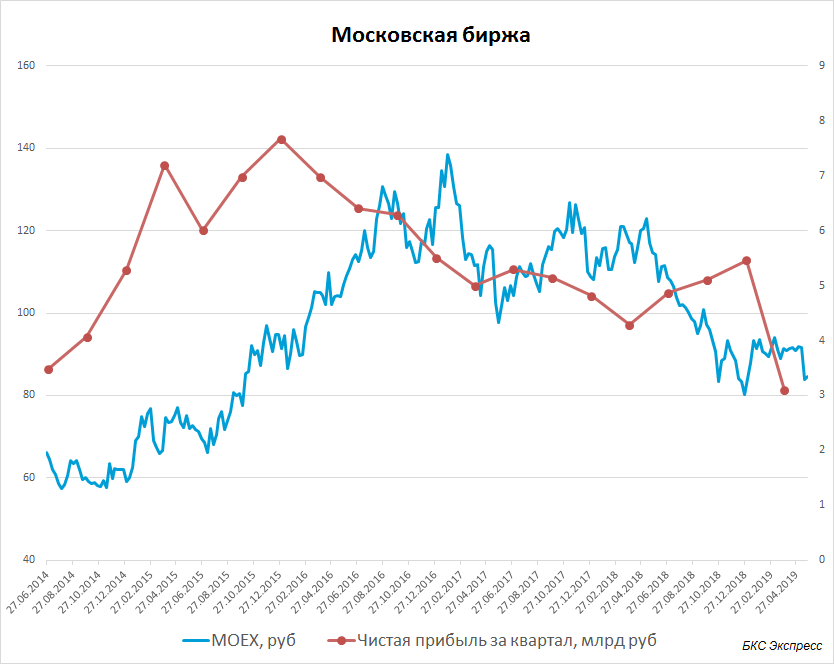
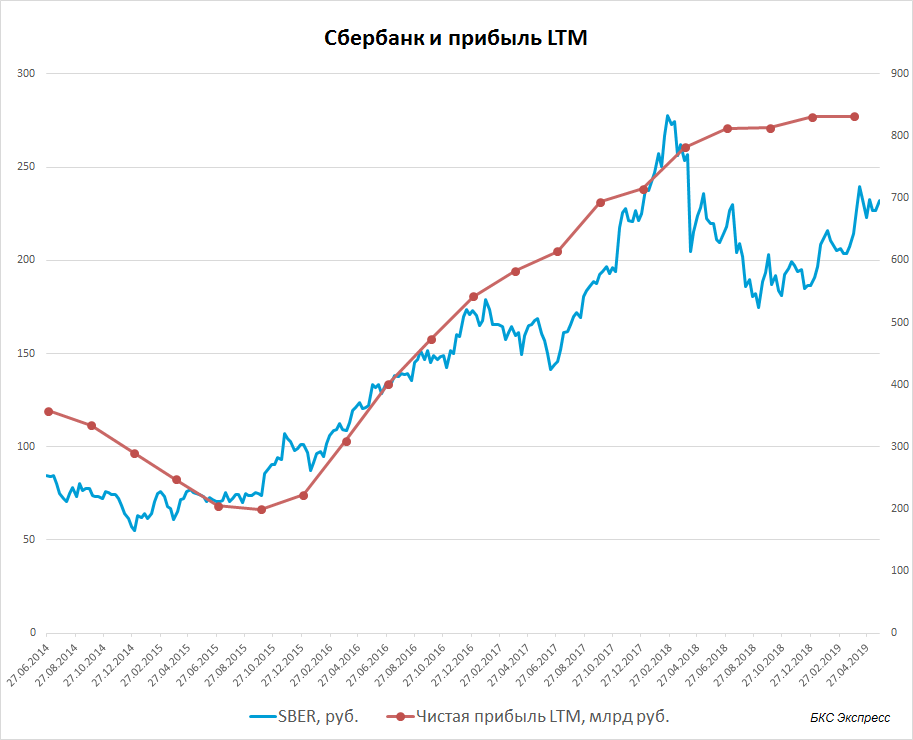
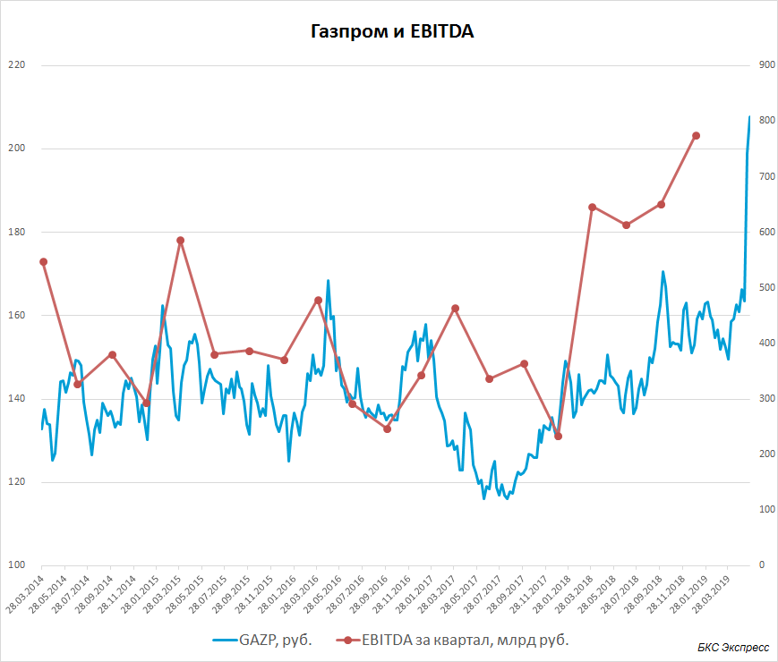

«Стоимость ценной бумаги определяется мнением людей» – Джон Мейнард Кейнс.
Легенда экономики, лауреат многочисленных премии утверждает, что цена акции определяется мнением людей. Но подождите, а как же выручка, прибыль…? Попробуем разобраться, что же действительно влияет на акции и причем тут суждения инвесторов.
С самого возникновения биржи и финансовых рынков желанием любого инвестора является знание цены акции или любого другого инструмента в будущем. Между тем еще никто за долгие десятилетия таким абсолютным навыком так и не овладел.
Неспособность с приемлемой точностью и повторяемостью результата предсказать цены актива порождает всевозможные «методики исследования» рынков, от технического анализа и поиска циклов до магической астрологии.
Между тем процесс ценообразования достаточно прост. Акции растут в цене потому что все больше инвесторов хотят купить бумагу, а те, кто уже купил не хотят продавать ее по текущей цене. Объединяет рациональных инвесторов то, что они ожидают сохранения или роста дохода от своих инвестиций в будущем.
Эта логика работает в большинстве случаев, за исключением сомнительных схем в низколиквидных активах или моментов маниакального роста инструментов. В качестве примера можно вспомнить «бум доткомов» или недавний всплеск интереса к биткоину. В этих условиях котировки движутся нерациональными инвесторами. Акции или другие финансовые инструменты покупаются, основываясь на ничем не подкрепленной вере в продолжение их роста в будущем. Но наш обзор не об этом.
Мы поговорим о стоимостном инвестировании. Это стратегия инвестирования, которая основывается на обнаружении недооцененных ценных бумаг путем фундаментального анализа. Целью такого подхода является поиск компаний, внутренняя стоимость которых выше текущей рыночной оценки.
Предположим вы являетесь акционером компании, которая не торгуется на открытом рынке. Вы имеете лишь один способ получать доход от своих инвестиций – дивиденды. Если компания публичная, то есть ее акции торгуются на бирже, то в качестве еще одного способа возврата средств своим акционерам компания может выбрать обратный выкуп своих акций на открытом рынке.
Когда фирма может наращивать своим акционерам дивидендные выплаты или проводить обратный выкуп акций?
В большинстве случаев нарастить поток средств акционерам позволяет рост прибыли компании. Отсюда явная корреляция прибыли и цены акции. Ниже приведены примеры по нескольким эмитентам. В качестве прибыли был взят чистый показатель после уплаты налогов.
Такая картина довольно типична, независимо от сектора и размера компании. Другой пример АЛРОСА. Цена довольно точно повторяет контуры графика чистой прибыли. Как и в примере выше, шкала цены акции находится слева, а чистой прибыли справа.
Ниже пример с Газпромом. Несмотря на то, что акция была под давлением политических факторов и высокой инвестпрограммы, тенденция котировок акций компании неплохо коррелирует с динамикой чистой прибыли. И даже последний выстрел до 200 руб., формально произошедший на фоне рекомендации высоких дивидендов, вполне сочетается с рекордной квартальной прибылью и в целом с улучшением финансового профиля эмитента. Эта ситуация как раз подтверждает один из главных тезисов этого обзора: акции растут из-за ожидания роста выплат инвесторам на фоне улучшения показателей прибыли.
На всех приведенных выше диаграммах можно довольно часто увидеть временную раскорреляцию прибыли и цены акции. Причем иногда цена акции опережает изменение тенденции в прибыли, а иногда запаздывает. То есть инвесторы не всегда правильно оценивают изменение фундаментальных условий, способных повлиять на капитализацию. Это могут быть курсовые колебания, изменение стоимости основного производимого товара или сырья и т.д.
Неэффективность рынков или периодическая несостоятельность мнения инвесторов относительно фундаментальных условий и будущих прибылей хорошо видны на примере Московской биржи. По сути, падение прибыли началось еще в начале 2016 г. с началом активного снижения ставок ЦБ РФ. Но акция начала переоцениваться лишь в начале 2017 г.
Когда мы говорим об оценке инвесторами показателей чистой прибыли, нужно понимать, что единичное квартальное снижение прибыли часто вполне оправданно игнорируется. На прибыль могут влиять единичные факторы. Например, списания или начисления, так называемая «бумажная прибыль» от переоценки активов, разовые поступления от продажи доли в совместных предприятиях и т.д. Бухгалтерия в этом вопросе имеет довольно широкое пространство для «маневра».
Поэтому многие долгосрочные инвесторы смотрят на показатель LTM (Last twelve month), то есть на прибыль за последние 12 месяцев. Такое «усреднение» позволяет устранить сезонность и сгладить разовые всплески или провалы по прибыли. К примеру, вот как выглядит график цены акции и прибыли LTM для Сбербанка.
Ориентируясь на прибыль за последние 12 мес. можно эффективно следовать долгосрочному тренду развития компании, а также отслеживать ускорение или замедление роста доходов компании. Это также хорошо видно на примере Сбербанка начиная со второй половины 2018 г.
При всех указанных плюсах LTM прибыль обладает одним большим минусом – как индикатор проблем бизнеса она сильно запаздывает. Между моментом начала переоценки акции и снижением прибыли или остановкой ее роста может пройти несколько месяцев. Часто в эти моменты причины проблем в бизнесе уже на поверхности и известны всем участникам рынка.
Поэтому в качестве альтернативного показателя развития бизнеса, не учитывающего разовые факторы, инвесторы часто смотрят на прибыль до вычета процентов, налогов, списаний и амортизации, то есть на EBITDA или OIBDA. Этот показатель характеризует денежные потоки в компанию и включает такие неденежные расходы как амортизацию.
Для примера посмотрим на те же акции Газпрома, но уже через призму сравнения с квартальной EBITDA компании. Сходство динамики цены и этого показателя более устойчивое, чем по чистой прибыли.
В более редких случаях высокой волатильности и этого показателя можно встретить использование EBITDA LTM. Такой вариант представления прибыли еще больше сглаживает колебания дохода бизнеса.
EBITDA также удобно использовать, когда чистая прибыль эмитента нестабильна или подвержена сильным колебаниям. Это показатель почти никогда не бывает отрицательным в отличие от чистой прибыли. А если и бывает – это может означать большие проблемы для инвестора в такие компании (если это не стартап). Упрощенно EBITDA в большинстве случаев можно представить в виде: операционная прибыль + амортизация. Если показатель отрицательный – компания убыточна на операционном уровне и порой неконкурентоспособна.
На приведенных выше графиках в момент падения квартальной чистой прибыли ниже нуля (АЛРОСА, Газпром) мы часто не видим серьезного движения акции. В эти моменты EBITDA компании остается относительно стабильной.
Цена акции и динамика прибыли в большинстве случает следуют в одном направлении. При этом одним из наиболее важных моментов в представленной выше корреляции является то, что цена акции часто несколько опережает данные по прибыли или наоборот, запаздывает. Инвесторы стараются предвосхитить те или иные результаты эмитента, совершая покупку или продажу акций на основе операционных результатов компании, составляя мнение на основе отраслевых исследований, сырьевых цен или стоимости конечной продукции и т.д. Но всегда ли инвесторы оказываются правы? Конечно нет.
По этому поводу есть известная цитата экономиста Пола Самуэльсона: «Рынок предсказал девять кризисов из последних пяти».
Другой важный момент в том, что на приведенных выше графиках есть области, когда при изменении прибыли или EBITDA цены акций не следуют за этой тенденцией. Такое расхождение происходит не часто, но в таких случаях инвесторы заранее с большой долей точности предполагали подобные результаты компании, а эффект от снижения или увеличения прибыли был «вложен» в котировки значительно раньше. Кроме того, изменения по прибыли или EBITDA, которые не приводят к соответствующей динамике цены акции, как правило, являются относительно краткосрочными или даже разовыми явлениями. Частично нам удается избавиться от таких ложных сигналов применением LTM показателей.
Описанный в данной статье принцип инвестирования в акции публичных компаний лежит в основе так называемого «стоимостного инвестирования». В частности, на вытекающих из корреляции цены и прибыли следствиях базируются конкретные методики подбора акций. Более подробно про стоимостной подход к инвестированию в акции будет рассказано во II части обзора.